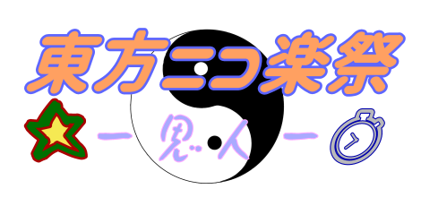

|

東方ニコ楽祭・思人
＜企画名称＞
東方ニコ楽祭・思人
＜企画趣旨＞
〝推し〟への迸りあふれる熱い想いと愛を叫ぶ！
＜企画内容＞
①イラスト投稿企画
テーマは【推し】。
手書きやMMD静画でニコニコ静画に投稿する
※R18作品はご遠慮ください
※参加されたイラストは、生放送・Twitterなどで、使用また紹介されることがあります
※設定タグ：
（必ずタグロックをお願いします）
イラスト投稿期間 ：2022年9月1日（木）～9月14日（水）
②歌詠み投稿企画
投稿されたイラストを視て、静画コメント欄へ歌又は句をコメント投稿する
※ハンドルネームも記してください。記載がない場合は"詠み人知らず"となります。
※参加されたコメントは、本WEBサイト・生放送・Twitterなどで、使用また紹介されることがあります
コメント投稿期間 ：2022年9月1日（木）～9月15日（木）
③アレンジ動画投稿企画
推しの一曲、愛のこもったアレンジをニコニコ動画へ投稿する。
※西方アレンジや東方風自作曲も大歓迎
※イラスト支援静画や詠まれた歌の動画内使用を歓迎
※リアルイベント頒布のXFD動画の投稿を歓迎
※参加された動画は、生放送・Twitterなどで、使用また紹介されることがあります
※設定タグ：
（必ずタグロックをお願いします）
アレンジ投稿期間 ：2022年9月16日（金）午後9時～9月18日（日）午後9時
④推し普及動画投稿企画
テーマは【推し】。推しの魅力をニコニコ動画で布教する！
動画形式は不問。MMD、文字、やってみた等、何でもありです。
※R18作品はご遠慮ください
※参加された動画は、生放送・Twitterなどで、使用また紹介されることがあります
※設定タグ：
（必ずタグロックをお願いします）
推し普及投稿期間 ：2022年9月16日（金）午後9時～9月18日（日）午後9時
告知宣伝動画
|